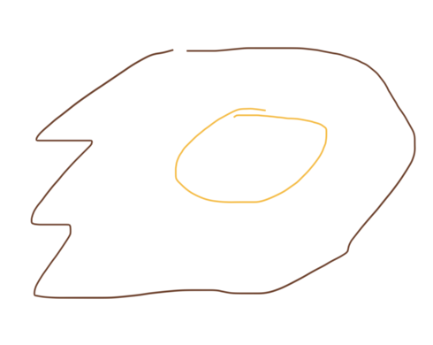

Fried Egg

Description
Eggs are tasty. Oil is tasty. Combine the two and you get an even tastier egg.
Ingredients
- One raw egg
- Oil fit for human consumption
Steps
- Crack open egg in SEPARATE container
- Add oil to pan and turn on heat to medium-high.
- Let it preheat for a minute.
- Add egg.
- Let egg cook to desired doneness. Flip over after bottom has solidified if sunny side eggs are not desired.
- Turn heat off.
- Serve.